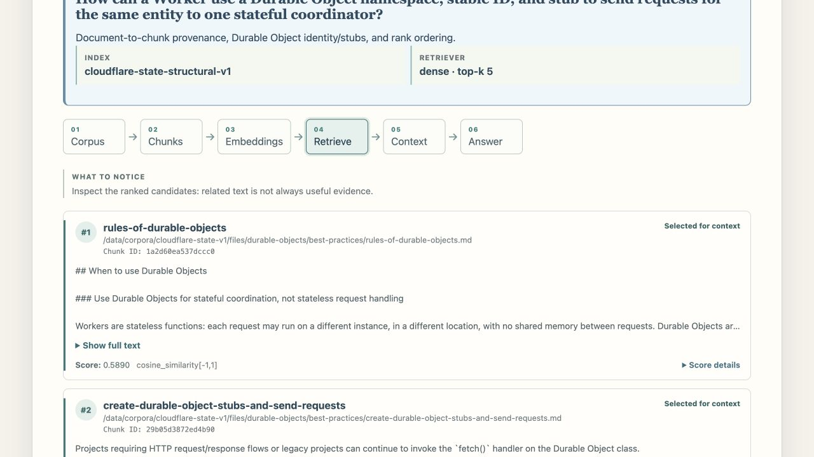
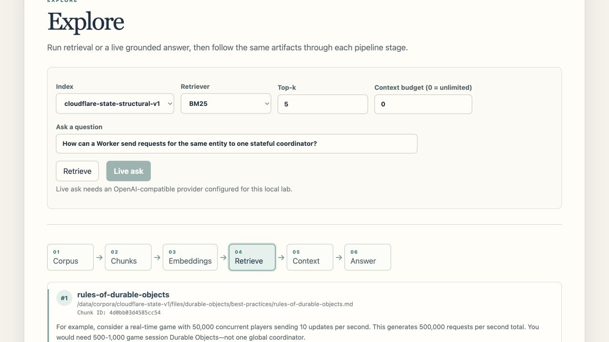
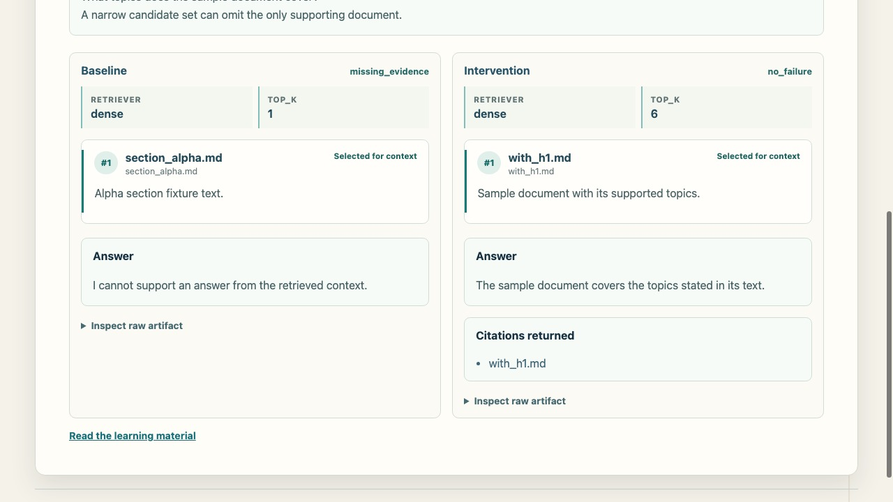
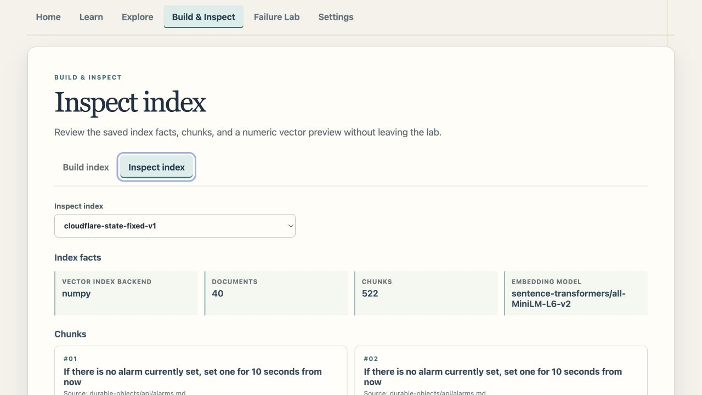

START HERE
Visual workspace
Replay real-corpus lessons, follow a live retrieval course, and run your own index, reranking, evaluation, and provider experiments.
Explore the learning workspace →A LEARNING-FIRST RAG LAB
See classic RAG actually run — real documents, real retrieval, real citations.
Most tutorials hide retrieval behind a framework call. This lab keeps the calculations, candidate movement, evidence, and generation boundary visible so you can reason about each result.
ONE CORE · TWO WAYS TO LEARN
The visual workspace and CLI expose the same project-owned RAG artifacts. Start guided; go deeper when you are ready.
START HERE
Replay real-corpus lessons, follow a live retrieval course, and run your own index, reranking, evaluation, and provider experiments.
Explore the learning workspace →GO DEEPER
Repeat configurations, compare results, inspect raw output, and follow the same mechanics command by command.
See the CLI path →WHAT MAKES IT DIFFERENT
Real evidence, not a toy demo
Four guided replays and six live retrieval modules use 40 real Cloudflare docs — not a synthetic one-file example.
One core, two ways in
The visual lab and CLI use the same project-owned RAG components and expose the same mechanics and artifacts — there is no demo-only pipeline.
Failure is part of the curriculum
A dedicated Failure Lab replays bad chunking, buried evidence, and stale documents — and shows whether a fix actually helps.
No framework black box
Chunking, retrieval, prompting, and citations are hand-written and readable — no LangChain, LlamaIndex, or Haystack wrapper hiding the mechanics.
Every stage is implemented directly — no framework wrapper, no hidden magic.
REAL EVIDENCE
Every citation below is a real retrieval over the bundled Cloudflare corpus — not a mockup.
Question How can a Worker use a Durable Object namespace, stable ID, and stub to send requests for the same entity to one stateful coordinator?
Bind a Durable Object namespace to the Worker, derive a stable Durable Object ID for the entity, obtain that object's stub, and send every request for the same entity to that one coordinator.durable-objects/best-practices/rules-of-durable-objects.md durable-objects/best-practices/create-durable-object-stubs-and-send-requests.md
Retrieved, packed into context, and cited — not paraphrased from memory.
Question What is the tradeoff between Workers KV eventual consistency for global configuration and R2 object storage for mutable files?
Use KV for configuration that is read globally and tolerates eventual consistency. Use R2 for mutable file or object content that needs strong read-after-write behavior.kv/concepts/how-kv-works.md r2/reference/consistency.md
Two source documents, one grounded comparison.
Learn through real documents: start with guided replays, inspect retrieval math live, then run experiments of your own.
Follow a recorded real-corpus lesson from source documents to a cited answer, one visible stage at a time.
Follow six live modules through BM25 math, cosine similarity, NumPy and Qdrant, hybrid fusion, reranking, and evaluation.
Compare two retrieval configurations over 16 reviewed questions, inspect every result, then carry reranking into free-form Explore.




Run the local studio with Docker Compose →
Core lab workflows run locally with no account required. Live Ask contacts only the provider you configure.
WHAT IT COVERS
Everything maps to one visible architecture and the same project-owned artifacts.
Kept deliberately minimal — every moving part is visible in the code.
No LangChain, LlamaIndex, or Haystack wrapper. The core RAG mechanics are implemented directly.
The direct, repeatable companion to the visual workspace: index a corpus, retrieve evidence, and ask a question with the same inspectable mechanics.
# Build the index from a local corpus
$ rag index --corpus corpus/watsonx-docsqa --chunking-strategy structural
# Retrieve top-5 chunks with hybrid search
$ rag retrieve "What is a deployment space?" --retriever hybrid --top-k 5
# Ask a question and get a grounded answer with citations
$ rag ask "How do I deploy a model?" --context-budget 8192
# Evaluate retrieval quality against a QA set
$ rag eval --qa-file corpus/watsonx-docsqa/qa.jsonl --retriever hybrid
# Diagnose retrieval failure cases
$ rag diagnose --cases-file tests/fixtures/failure/cases.jsonlClone it, run it, or just read how it's built — all on GitHub.
View on GitHub